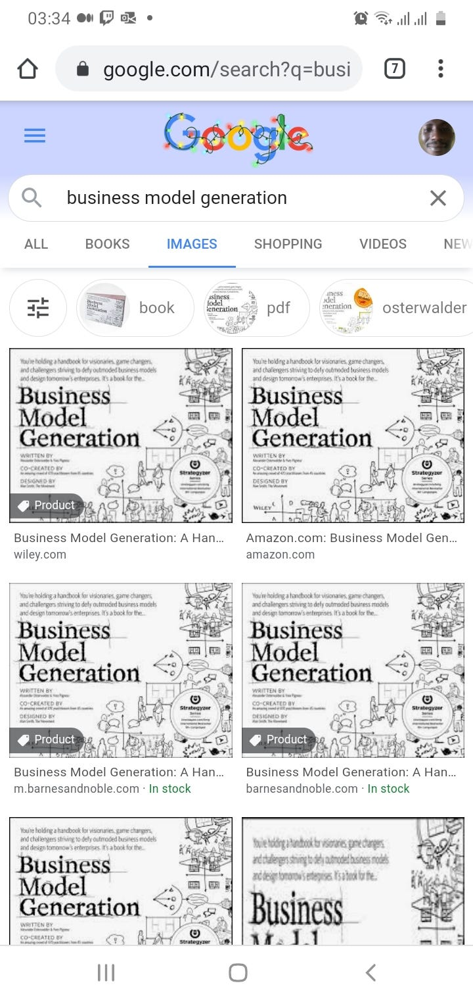

Dec 4, 2020
·
An infinite number of products and services business opportunities
there is an infinite number of great online products and services that can still be built BUT the internet is an aggregation of micro mediums and you better have to know the audience behind these microchannels before you try to build an online service or product. The audience you can reach easily without stealing attention should drive your product or service generation model. The best practice being to focus on this minimum viable audience that you could delight and that will be eager to spread the message about the value you bring.
Traction driven business model generation
